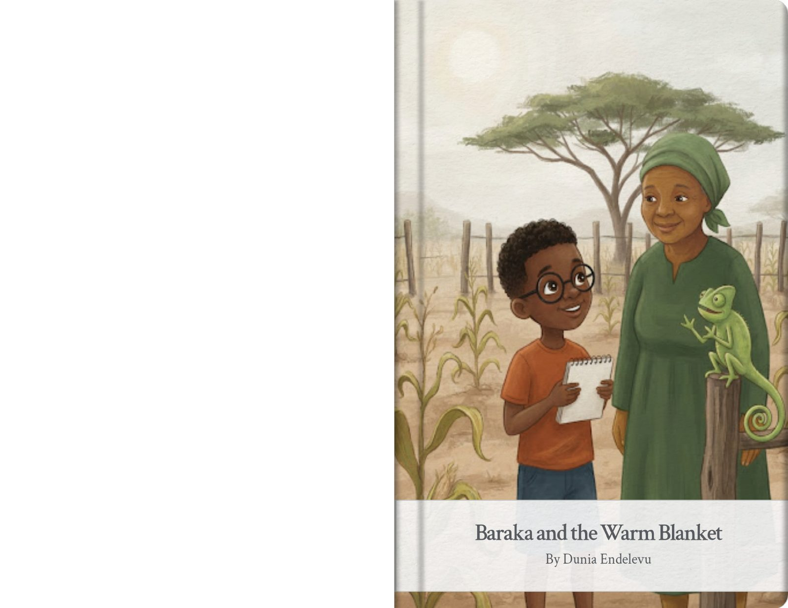

Baraka and the Warm Blanket
A Dunia Endelevu storybook about climate change, for ages 6 to 10.

![Page 2. The sun shone brightly over Machakos, turning the dusty earth a pale, warm brown. Nine-year-old Baraka sat under an acacia tree, fanning himself with his favorite sketchbook. Nearby, his grandmother, Shosho, inspected the curled leaves of her maize field. "The afternoon is so heavy with heat today," Baraka sighed. Shosho wiped her forehead and smiled gently. "When I was a little girl, the rains came like clockwork every season," she said. "Now, the heat feels stronger, and the rains are uncertain."](assets/books/baraka/page-02.webp)


Story by Dunia Endelevu. Illustrated with AI (Gemini). Free to read, print and share for learning.
Read the story as text
- The sun shone brightly over Machakos, turning the dusty earth a pale, warm brown. Nine-year-old Baraka sat under an acacia tree, fanning himself with his favorite sketchbook. Nearby, his grandmother, Shosho, inspected the curled leaves of her maize field. "The afternoon is so heavy with heat today," Baraka sighed. Shosho wiped her forehead and smiled gently. "When I was a little girl, the rains came like clockwork every season," she said. "Now, the heat feels stronger, and the rains are uncertain."
- Suddenly, a tiny movement caught Baraka’s eye on the wooden fence. A small chameleon slowly shifted from a shade of bright green to a warm, vibrant orange. "Phew!" a cheerful voice squeaked. "I’m Kinyonga, and I turn orange when it gets too hot!" Baraka gasped in delight. Kinyonga swiveled one giant eye towards the sky. "Do you know why today is so hot? Today’s heat is the weather—what the sky is doing right now. But climate is the usual pattern of weather over many, many years.”
- Before Baraka could ask another question, Kinyonga’s curly tail wrapped gently around Baraka’s wrist. In a flash of magical imagination, the tail uncoiled into a giant, sparkling ribbon that lifted them high above the clouds! Up, up, up they soared into space. Looking back, Baraka saw planet Earth gleaming blue and green, surrounded by a delicate layer of air. "Look closely," Kinyonga said, pointing his tiny nose. "Earth wears a thin, glowing blanket made of invisible gases.”
- Kinyonga clapped his tiny front feet together. "This invisible blanket traps just enough joto—that’s warmth from the sun—to keep our planet cozy," he explained. "Without this blanket, Earth would be far too cold for humans, maize plants, or chameleons to live! It keeps the temperature just right for all living things." Baraka marveled at the gentle glow wrapping around the big blue world below them.
- But as they floated closer to the ground, Kinyonga’s expression became serious. Far below, cars, busy factories, and big power plants were puffing out soft grey clouds of gas into the air. "When people burn coal, oil, and gas, it adds extra carbon dioxide into the air," Kinyonga explained softly. "And when large forests are cut down, there are fewer trees to soak up that extra gas."
- Baraka watched as the grey puffs floated up into the atmosphere, making the blanket around Earth grow thicker and thicker. "A thicker blanket traps far too much joto," Kinyonga said. "Did you know our whole planet is now more than one degree Celsius warmer than it was 150 years ago? That sounds like a small number, but for an entire world, it’s a huge change!"
- With a gentle whoosh, the imagination journey landed Baraka back on solid ground. Now he understood what Kinyonga meant. In Kenya, a warmer planet causes longer dry spells that make Shosho’s soil dry and cracked. At other times, it brings heavy downpours that cause floods over distant roads, making it hard for children to travel safely.
- "Is there hope?" Baraka asked, looking down at his sketchbook. Kinyonga puffed out his chest proudly. "Of course! Look at Kenya!" Kinyonga pointed toward the Rift Valley, where giant plumes of clean white steam rose high into the air. "This is geothermal energy! Deep underground heat makes steam, which creates clean electricity without making the blanket thicker. Most of Kenya’s electricity comes from clean sources like this!"
- That evening back at the farm, Baraka showed Shosho a colorful drawing in his sketchbook. It showed Earth wrapped in a healthy, perfectly warm blanket, surrounded by green trees and bright sunshine. Nearby on the fence, Kinyonga rested peacefully, his skin back to a brilliant green under the gentle shade. Shosho hugged Baraka warmly. "You are learning how to care for our home," she smiled. Today, switch off one light you are not using, and tell someone why!